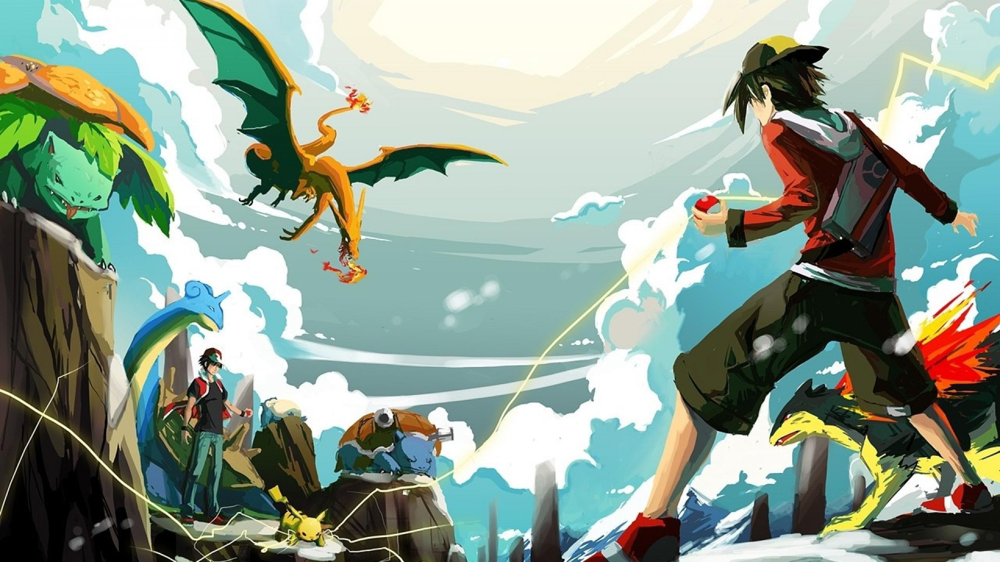

Положение устройства в пространстве

Yours Truly, Famous Inc.
Егор Коновалов, ЦВТ
Стандарт: https://www.w3.org/TR/geolocation-API/
navigator.geolocation.getCurrentPosition()
navigator.geolocation.watchPosition()
navigator.geolocation.clearWatch()
navigator.geolocation.getCurrentPosition(
function(position){
dspl.innerText =
'longitude: ' + position.coords.longitude + '\n' +
'latitude: ' + position.coords.latitude
;}
);
position.coords.longitude
position.coords.latitude
position.coords.altitude (optional)
position.coords.accuracy
position.coords.altitudeAccuracy (optional)
position.coords.heading
position.coords.speed
position.timestampСтандарт: https://www.w3.org/TR/orientation-event/
deviceorientation
devicemotion
compassneedcalibration
Device Orientation detection in progress...
window.addEventListener('deviceorientation',
function(event){
dspl.innerText =
'alpha: ' + event.alpha + '\n' +
'beta: ' + event.beta + '\n' +
'gamma: ' + event.gamma
;
}
);
Изображения - dev.opera.com
Get phone in your hands...
window.addEventListener('devicemotion',
function (event) {
do_something(
event.acceleration.x, // y, z
event.accelerationIncludingGravity.x, // y, z
event.rotationRate.alpha, // beta, gamma
event.interval
)
}
);<a-scene>
<a-sphere position="0 1.25 -1" radius="1.25" color="#EF2D5E"></a-sphere>
<a-box position="-1 0.5 1" rotation="0 45 0" width="1" height="1" depth="1" color="#4CC3D9"></a-box>
<a-sky color="#ECECEC"></a-sky>
<a-entity position="0 0 3.8">
<a-camera></a-camera>
</a-entity>
</a-scene>
Егор Коновалов
@agegorin
Центр Высоких Технологий, 2016